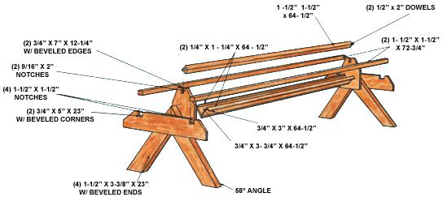

Mother's All-Purpose Chicken-Feeding Station
For clean scratch and happy (as well as productive) hens, it's worth your while to cobble up to this design.
The Mother Earth News Editors
July/August 1982
Whether you keep a few hens to provide your home with meat and eggs or to bring in a little cash, you can lighten your chores and insure that the food your fowl fatten on is fresh and clean by building your own version of MOTHER's all-purpose chicken feeder. This handy device will keep your feathered friends' mash and grain off the ground and protected from mildew and rot. And, of course, a regular supply of fresh, wholesome edibles can stimulate both a chicken's appetite and its egg production. Furthermore (and almost as important to the busy poultry farmer), the feeding station is easy to build . . . can be made with inexpensive, readily available materials and tools . . . and incorporates a little bit of "fowl psychology" for good measure.
MOTHER's chicken feeder is designed to provide dining facilities for 16 hungry hens, but of course you can vary its dimensions proportionately to suit the needs of your own flock. If you have more mouths to feed, you can either build an additional station or lengthen the structure . . . keeping in mind the need to maintain both stability and movability. (Because our feeder is designed to be used either indoors or out, we made it short and easy to handle.)
Whatever size you choose to make it, the poultry cafeteria includes several features that are calculated to keep even the most troublesome fowl honest ... no matter what its place in the pecking order. The free-swiveling guardrail across the top will keep your birds out of the feed trough, yet allow them ready access to their dinner . . . wooden pins-countersunk into the ends-enable the rail to spin freely should a hen attempt to perch there, and thus prevent the bird from "fowling" the food . . . and the lips on the trough's edges function as feed-savers to assure a minimum of waste even when the feeder is nearly full.
In summary, then, MOTHER's all-purpose chicken feeding station can up your hens' output-by letting the birds eat all they want, when they want it-and reduce feed losses. And anytime you can increase production while cutting down on waste, you should be able to see your henhouse's efficiency turning sunny side up!
See the Image Gallery for a diagram of the feeder.
 |
 |
|